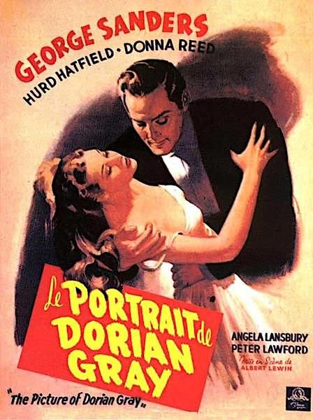

The Picture of Dorian Gray
18th Academy Awards
(Oscars 1946)
3 Nominations, 1 Award
| Nominations | ||
|---|---|---|
| Category | Nominees | Result |
| Actress in a Supporting Role | Angela Lansbury | Nominated |
| Cinematography (Black-and-White) | Harry Stradling | Won |
| Art Direction (Black-and-White) | Cedric Gibbons, Edwin B. Willis, Hans Peters, Hugh Hunt, and John Bonar | Nominated |